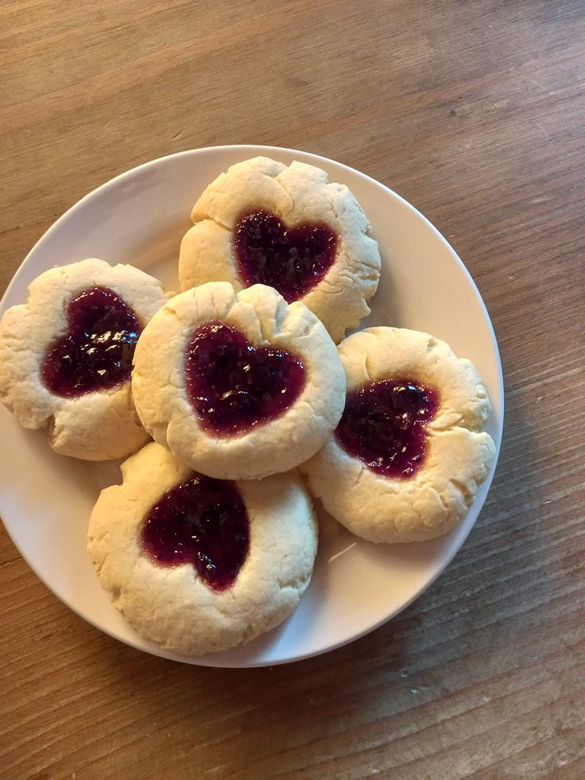
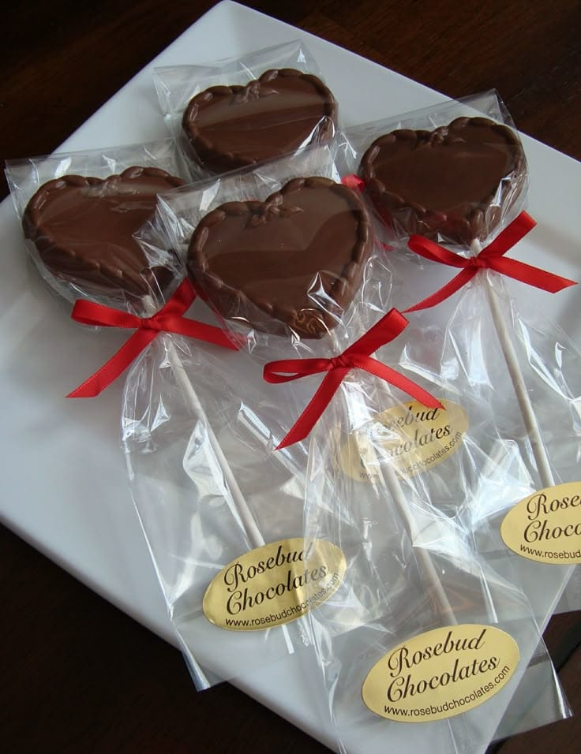
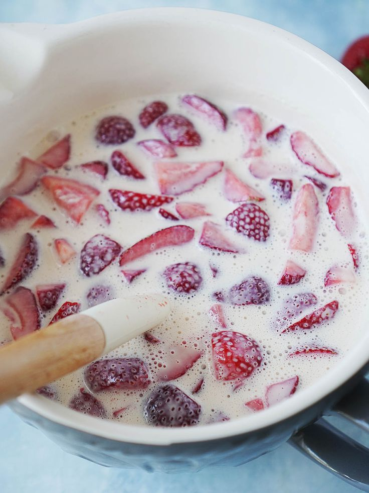

Recetas
Galletitas
Ingredientes
- 1 taza de harina
- 3 cucharadas de azúcar
- 3 cucharadas de mantequilla derretida
- 1 huevo
Preparación
- Mezcla todos los ingredientes en un tazón hasta tener una masa suave.
- Forma bolitas pequeñas y aplástalas un poco.
- Opciones rápidas: Hornéalas 10 minutos en microondas (en un plato con papel encerado). O cocínalas en un sartén a fuego bajito, volteándolas como si fueran hot cakes, hasta que se vean doraditas.
Paletas de Chocolate
Ingredientes
- 1 barra de chocolate
- Palitos de paleta
- Molde o vasitos de plástico
Preparación
- Derrite el chocolate: En microondas (30 segundos, mover y repetir hasta que se derrita). O en sartén a fuego bajito, moviendo para que no se queme.
- Vierte el chocolate en moldes o vasitos.
- Pon los palitos y mete al congelador por 1 hora.
Fresas con Crema
Ingredientes
- 1 taza de fresas
- 1/2 taza de crema (puede ser yogur natural también)
- 2 cucharadas de leche condensada o azúcar
Preparación
- Lava y corta las fresas en pedacitos.
- En un vasito, mezcla la crema con la leche condensada o azúcar.
- Agrega las fresas encima y listo para comer. (También puedes ponerlas en la licuadora para hacer un batido rápido).
Sobre mí
Holisss, soy Mari y me gustan los postres fáciles. Este blog es para compartir recetas rápidas y faciles.